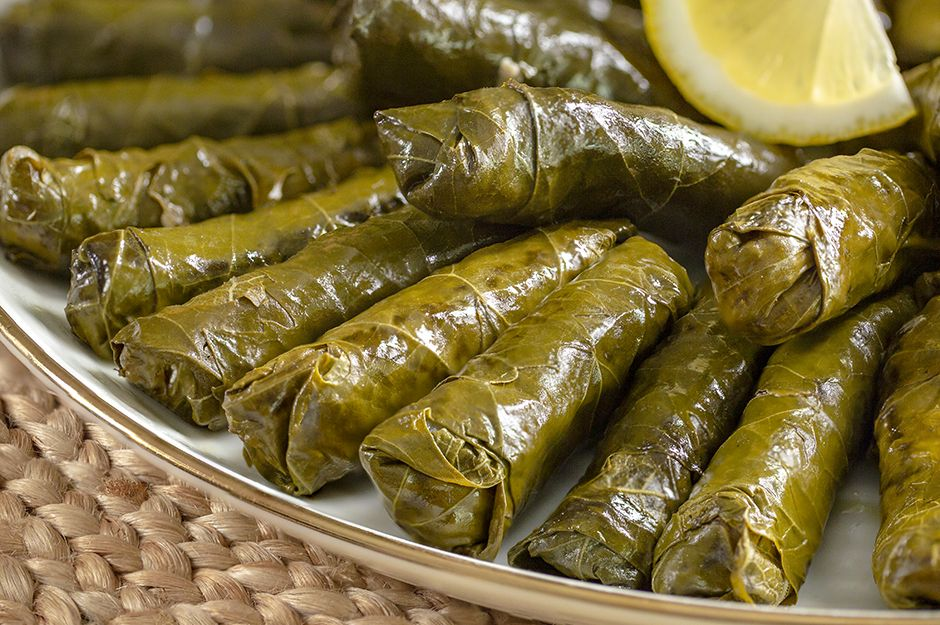

Sarma

What is sarma and how to make it?
Sarma is a version of dolma. Dolma refers to all vegetables stuffed with meat and rice, for instance, eggplants, peppers, zucchini, and so on. It can also mean pieces of meat (like chicken or beef) and even seafood (calamari tubes) filled with meat or rice.
Yaprak Sarma refers to vine/ grape or cabbage leaves stuffed with meat, meat, and rice or only rice and other vegetarian ingredients. Or stuff them with fish and bacon as well, for an unorthodox but thoroughly delicious version.
They are a staple of Turkish cuisine and are immensely popular all over the Balkans, Middle East, Central, and Eastern Europe. Basically, regions that were once occupied by the Ottoman Empire.
Ingredients:
- Vine leaves
- Rice
- Meat
- Herbs
Steps:
- Carefully unroll the leaves, they are usually rolled into small bundles. In the meantime, bring a large pot of water to a boil. Simmer them gently for about 3 or 4 minutes. Drain well and leave until cool enough to handle.
- Cook the rice, but only half the time of what is indicated on the packet’s instructions. For instance, my rice needs to be cooked for 20 minutes, so I only cook it for 10 minutes. Drain the rice well and let it cool slightly.
- Cook the finely chopped onion for about 3-4 minutes and let cool slightly. Mix with the meat, rice, grated garlic, herbs, and spices, adding salt and pepper to taste.
- Place a vine leaf on the working surface. If too small or broken, arrange two of them over each other to have a larger surface or to cover the holes. Add about 2 teaspoons of the filling in the middle-lower part of the leaf. Fold the left and right sides of the leaf over the filling, then form a roll, starting to roll at the base of the parcel. Place the roll with the seam facing down in a cooking pot. Repeat until you have used all the filling, arranging the rolls nicely and tightly in the pot.
- Boil some water in the kettle and pour it over the rolls to barely cover them. Cover the pot, bring to a boil, and simmer on low heat for 30-40 minutes. Check after 30 minutes, if the rice is not perfectly soft yet, give a bit more time. Carefully remove the cooked rolls from the pot and keep them warm in a larger, deeper serving dish. You will need their cooking liquid to make the sauce.
- Melt the butter in a small saucepan. Sprinkle the flour and stir well for 1-2 minutes. Add tomato paste and stir well again. Slowly start adding the cooking liquid while whisking continuously. Add a little chicken stock or vegetable broth if you feel that you don’t have enough cooking liquid. Simmer for 1-2 minutes stirring continuously. If the sauce is too thick, add a little more broth or stock. Adjust the taste with lemon juice, salt, and pepper. Pour the sauce over the stuffed vine leaves and serve immediately.